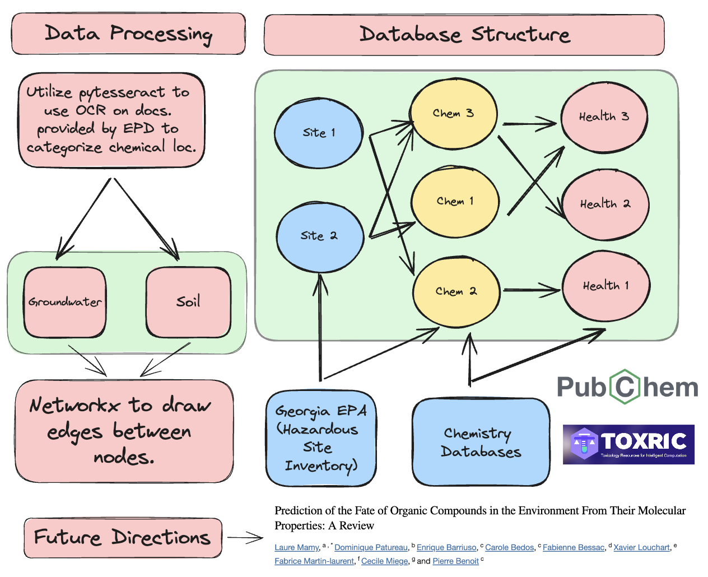

Utilizing Neo4j to Store Relationships Between Chemical Waste Sites and their Potential Health Impacts
Graphical Overview
Project Description:
In my latest venture, "GeoHazard-GraphDB: A Neo4j Product Mapping the Relationships of Hazardous Chemicals with Their Health Effects," I embarked on an ambitious journey to illuminate the complex landscape of Georgia's environmental data. This project, rooted at the intersection of technology and environmental science, harnesses the power of a Neo4j graph database to map hazardous waste site data in relation to chemical contaminants across Georgia.
Key Responsibilities and Achievements:
Innovative Database Design:
Developed and managed a Neo4j graph database, meticulously structuring it to capture intricate relationships between hazardous waste sites and chemical data. This design enabled dynamic querying and provided a robust framework for advanced data analysis.
Data Processing and Integration:
Skillfully processed and integrated diverse data sources, including the EPD Hazardous Site Inventory, TOXRIC database, and Hazardous Substances Data Bank from Pubchem. My approach ensured a comprehensive and accurate representation of environmental hazards.
User-Friendly Analytical Tool Development:
Created the MVP_GEOHAZARD-GRAPHDB application using Python and Shiny, offering a user-friendly interface for data visualization. This tool allows users to seamlessly navigate through vast datasets, perform aggregate analysis, and visualize data trends geospatially.
Interactive Data Visualization:
Designed and implemented interactive maps and dynamic charts within the application, enabling users to customize their data exploration and uncover critical insights about soil and water contamination in various Georgia counties.
Ongoing Development and Improvement:
Committed to continuous enhancement, we will begin to lay a roadmap for future capabilities expansion, including more advanced data analytics features.
Impact and Relevance:
"GeoHazard-GraphDB: A Neo4j Product Mapping the Relationships of Hazardous Chemicals with Their Health Effects" represents a significant leap in environmental data analysis and visualization, providing stakeholders with crucial insights into ecological challenges. By offering a detailed, interactive, and easily navigable database, this project stands as a testament to my ability to blend technical expertise with environmental stewardship, delivering tools that are not only powerful in their analytical capabilities but also accessible to a broad audience.